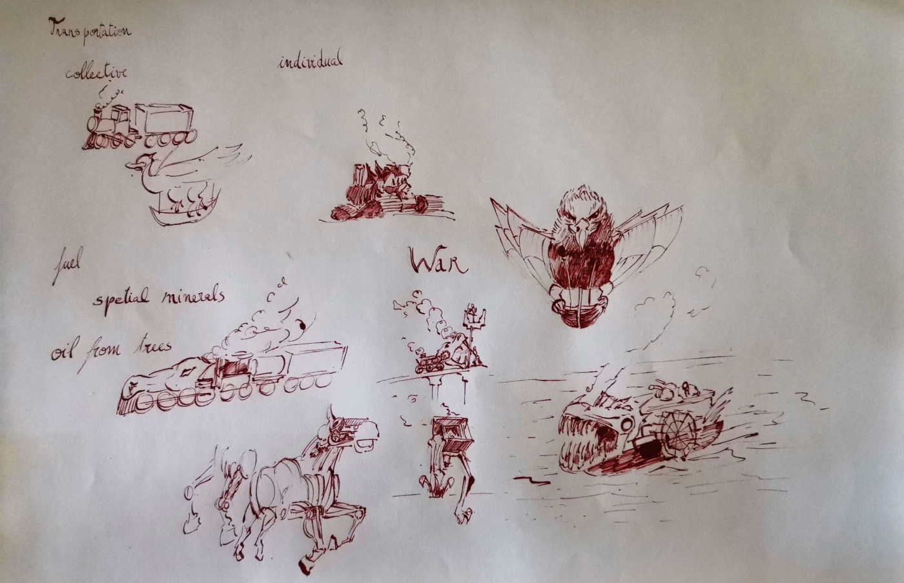
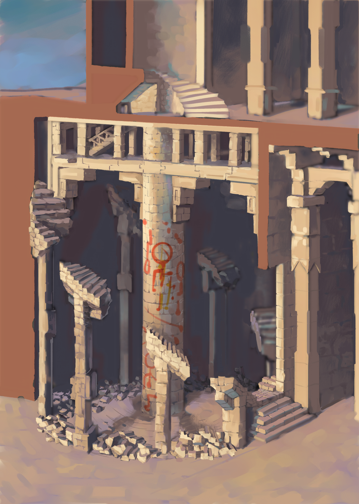
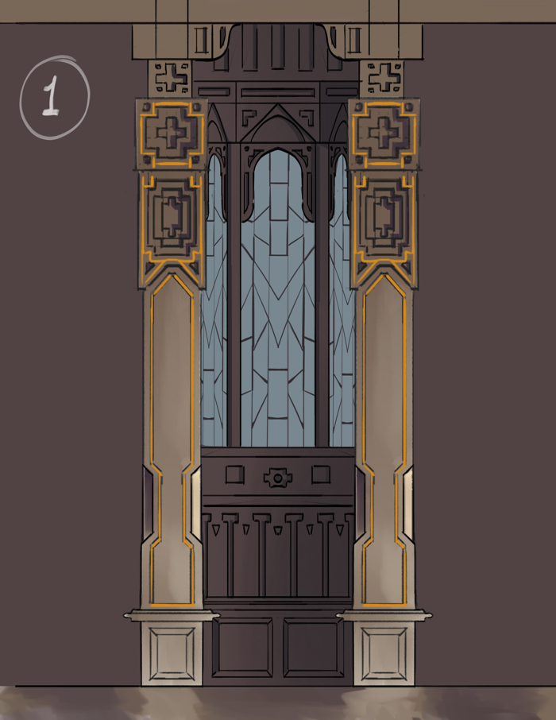
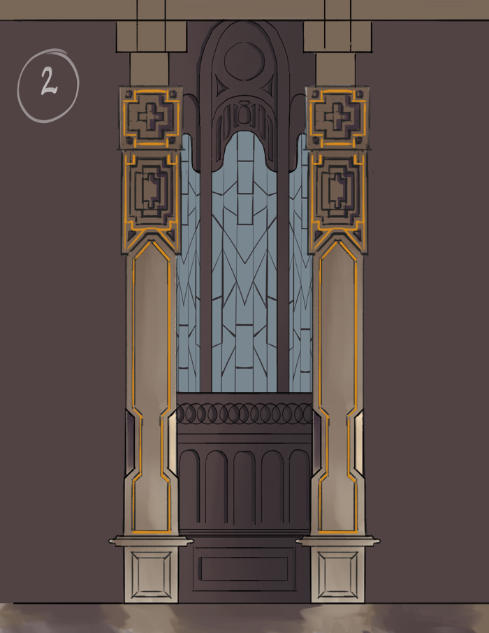
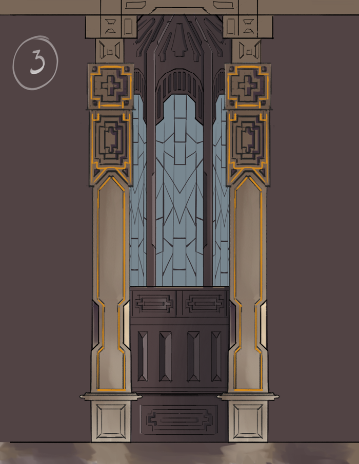
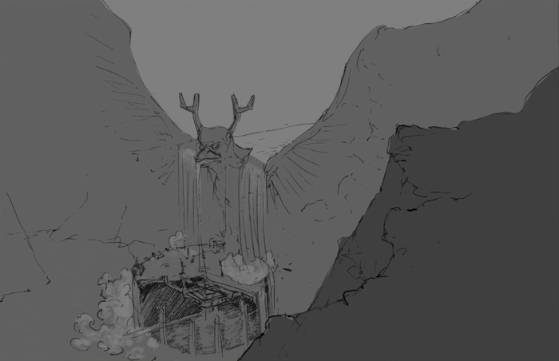
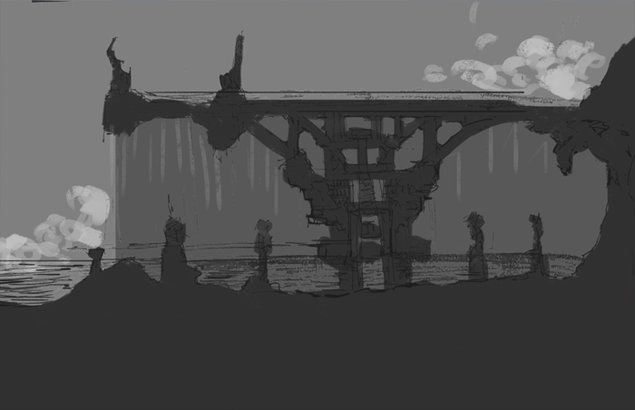
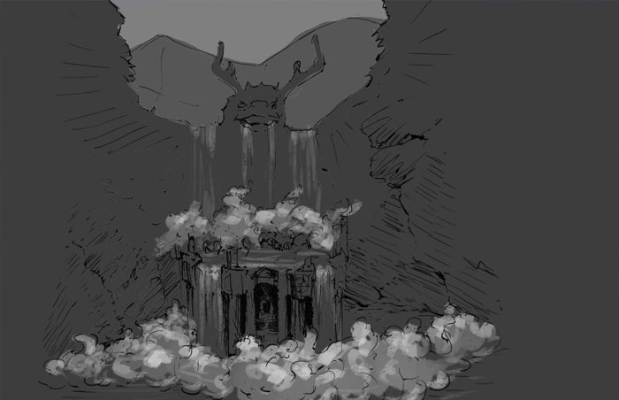

Illustration and
Concept Art of Landscapes
Video games and many other forms of visual media required the design and imagination of worlds and its dwellers. I aim to showcase the World Building with the following projects.
World Building is an iterative process, that involves constant feedback and experimentation. I usually design world building for existing projects of game development, though I've also touch on animation and film creation. These kind of projects require a collaborative design process. I may not own the hole design of this world, but with this process, I demonstrate my ability to discuss, debate and define my contribution in the project.

Tools are as important as the result they provide. Combining tools can speed up time and allow to iterate more to arrive at better results. For 3D scenes I may model with boxes a simple scene, iterate on the composition and lighting like a set designer, and then photobash the render to achieve the final look. Photographs are also a useful source of inspiration. Then, when in the painting over phase, I may alternate between a multilayer process, when iteration is required, or a more painterly method, of painting on a single layer and mixing color directly to paint in a more organic fashion.
The projects I will be showing here are Winds of Berkana, Paper Park, and Industries of Drathmor. Winds of Berkana and Paper Park are student lead projects that aimed to design Game Prototypes, with very distinct artistic visions and aims. THe First is a 3D exploration Game, the second is 3D platformer. Winds of Berkana aims to look more painterly, Paper Park aims to mimic the Arts and Crafts look. The last was an individual project, conceived for a hypothetical film or series, and with the aim to showcase the concept art and world building skills.

Winds of Berkana is 3D exploration Game, where mankind is gone. The only remains of its existence are the once great bastions, now empty and in ruins. The only surviving boy and his mother live isolated in a small lake, inside a quiet valley. Once his mother dies, she leaves him a clue that mankind still survives in an enchanted city - Eden. This triggers the boy to take his ship and explore the luxurious world, in search of Eden. The player will move through the game using a flying boat. It will use air currents to travel in between bastions, which are structures of the old world. Arriving in each bastion, the character will anchor the boat and step on land, traversing the ruins in a 3rd person view.
The task was to design the look of the structures present in the game - the ruins of Bastions. The process was an iterative one, with constant feedback from the team. The main criteria were: the scale, the decay and the age of this ruins



The project is divided in 3 bastions, one the first on is the Land Bastion, the other ones are the Water and Fire ones. The objective of this design was to add variety and interest to the exploration, introducing new structural aspects, such as towers, water channels or floating structures, but let not get ahead of ourselves. Here follows the designs for the land bastion
The view of the players, as they land the flying ship in front of the bastion entrance
A close shoot of one of the bastion corridors, where it can be seen the debris and the abandoned objects



The final design skipped the inverted pyramid concept, since it provided the verticality to contrast with the previous design - the Land Bastion, as commented by the team. As soo, a more slender pyramid like tower was designed, that would receive the water from the waterfall. This revision showcases an example of the iterative process taken.
For this concept, it was idealized a floating volcano, with builds hanging under the floating rocks and linked by gigantic chains. Lava would cascade trough basins, as if an infernal fountain. Smaller cliffs would be connected to the volcano by these chains, that would double as highways throughout the complex.
Some Critiques:
Lack of heat - the design did not convey the immense heat of a volcano
Fabric would be a safety hazard with all the fire and lava around
To hospitable - plants and blue skies did not convey the feeling of an inhospitable place
The overall color of the scene was change to convey the eminent danger and heat from the volcano. In the place of grass, barren rocks were placed. The dynamism of the clouds was enhanced, along with a better placement of the scene over a mountain landscape.
You can find more about Winds of Berkana in itch.io and in gamedev.tecnico.ulisboa.pt


Paper Park is a single-player 3D platform game where the player, Kiri,
has to explore the various rides in a theme park (the levels) and collect enough tickets to unlock more levels,
and coins to unlock further paths in the park, to collect all of Kami’s parts (kiri's companion)
and reach Rokoan’s junkyard, to beat him once and for all.
In Paper Park, the player is expected to explore levels,
filled with tickets and coins to collect, NPCs to talk to,
mini-games, and various platforming challenges.
This was a student-lead project where I also contributed with the environment design.
The environment were based on the arts and craft dioramas, usually built by children, where everything is possible.
In this spirit, the shapes mimic cardboard boxes and rolls, plastic caps, etc. ... - things anyone could get their hands on.

The player - Kiri - running through the paper forest

The view of the Dragon's Castle, the final boss in Paper Park

A mysterious creature that swallows Kiri, but not in a necessary bad way

A close shoot of one of the bastion corridors, where it can be seen the debris and the abandoned objects
You can find more about Paper Park in itch.io .

This project aimed to design hypothetical world, with the concept art for a movie or a game.
The digital paintings aim to illustrate the places and factions of this fictional world.
The lore of this world goes as follows:
In the ancient land of Drathmor, the very essence of magic is under treat
as the industrial forces of the Human and Dwarven civilizations spread,
threatening to unravel the delicate balance of nature and sentient beings.
In an effort to match and even outmatch the magic races, Humans built their own powerful creatures, through technology.
Soon, their power grew soo large that threatened the balance of the world.
The dwarf elders assemble to discuss the dark times they face.
At the same time, the Elves are having their own counsel.

The dwarf elders assemble to discuss the dark times they face.

At the same time, the Elves are having their own counsel

In an effort to match and even outmatch the magic races, Humans built their own powerful creatures, through technology

Soon, their power grew soo large that threatened the balance of the world

{kind=link}
{kind=link}
{kind=link}
{kind=link}
{kind=link}
{kind=link}
{kind=link}